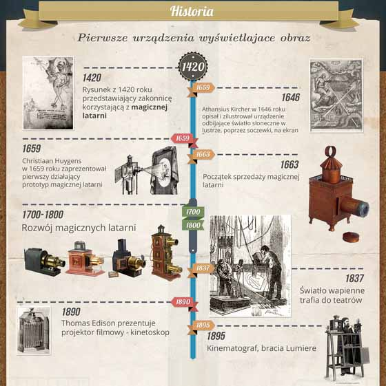
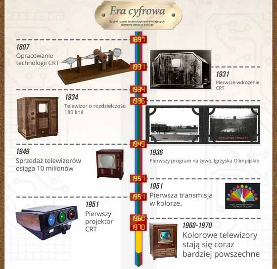
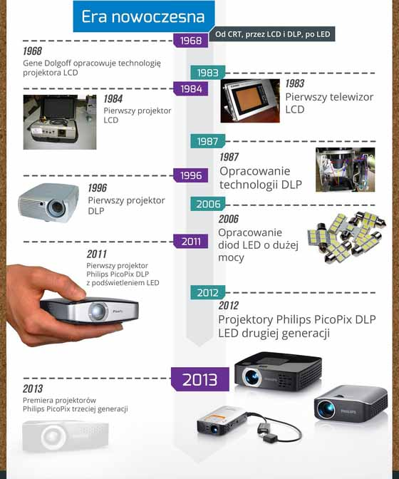

Projektory to zgodnie ze słownikiem języka polskiego PWN „przyrządy optyczne do rzutowania na ekran znacznie powiększonych obrazów”. Firma Węc PR przygotowała bardzo interesującą infografikę, pokazującą rozwój technologii wyświetlania obrazu.
Wszystko zaczęło się w 1420 roku – Johannes de Fontana naszkicował wówczas prototyp urządzenia, którego zadaniem było wyświetlanie obrazu z niewielkiej odległości. Rysunek ten zainspirował wielu wynalazców do opracowania przyrządu, który faktycznie na podobnych zasadach mógłby zadziałać. Zapisy historyczne nie są pewne, co do tego, któremu udało się to osiągnąć jako pierwszemu.
Najwcześniejsze źródła mówią o Francuzie Pierre Fournier, który miałby tego dokonać w 1515 roku. Potwierdzonym faktem jest jednak ten, że w 1646 roku jezuita Athansius Kircher opisał i zilustrował urządzenie, które odbijało światło słoneczne w lustrze, poprzez soczewki, na ekran. Opis z dzieła „Wielka Sztuka Światłocienia” był niezbyt dokładny, ale jak się okazuje – wystarczający.
Pierwszy działający prototyp takiego urządzenia został zaprezentowany przez Christiaana Huygensa 13 lat później. W 1663 roku natomiast, dzięki współpracy z londyńskim optykiem, Richardem Reevesem udało się rozpocząć produkcję i sprzedaż zwanych wówczas „magicznymi latarniami” urządzeń.

Pierwsza połowa XIX wieku upłynęła pod znakiem rozwoju technologii optycznych. Jednym z najważniejszych wynalazków tamtych czasów było „światło wapienne” Michaela Faradaya. Dzięki wysokiej jasności, rozwiązanie to znalazło zastosowanie w teatrach. Aż do końca XIX wieku światło wapienne było standardem oświetlania scen teatralnych.
Pod koniec XIX wieku wydarzyła się rewolucja – skonstruowane zostały pierwsze projektory, które umożliwiały odtwarzanie obrazu ruchomego. W 1890 roku Thomas Edison zaprezentował prototyp projektora cylindrycznego – obraz miał małe rozmiary i był bardzo ziarnisty. Z tego powodu wynalazca porzucił swój projekt i wraz z W.K.L. Dicksonem (jego asystentem) opracował kinetoskop, w którym obraz był oglądany przez wizjer przez jedną osobę.
Urządzenie to nie święciło jednak triumfów zbyt długo. Bracia Lumiere wynaleźli bowiem kinematograf. Urządzenie było połączeniem kamery, drukarki i projektora, który był w stanie wyświetlić nagrane klatki. Najważniejsza okazała się możliwość oglądania obrazu przez większą liczbę ludzi jednocześnie. Pierwszy film braci został wyświetlony na ekranie 16 na 21 metrów.

Później nastąpiła era cyfrowa. W latach 30-tych XX wieku pojawiły się pierwsze urządzenia, wykorzystujące technologię CRT. Znacznie przyspieszyła ona rozwój technologii wyświetlania obrazu.
Głównym elementem technologii CRT jest lampa elektronowa – promień w niej pada na powierzchnię fosforyczną. Uzyskanie obrazu jest natomiast możliwe dzięki wykorzystaniu trzech lamp odpowiedzialnych za poszczególne kolory – czerwony, zielony i niebieski; układu soczewek oraz układu scalonego.
Każda z lamp jest dodatkowo wyposażona w soczewkę, która odpowiada za ostrość i powiększenie obrazu. Połączenie trzech promieni światła powoduje otrzymanie gotowego obrazu. Początkowo technologia ta była wykorzystywana w telewizorach, a dopiero później trafiła do projektorów.

Kolejnym ważnym wydarzeniem w kwestii rozwoju projektorów było opracowanie przez Gene Dolgoffa technologii LCD, umożliwiającej wyświetlanie jaśniejszego obrazu niż CRT. Pierwszy projektor LCD został opracowany w 1984 roku. Urządzenia z tym rozwiązaniem miały jednak jeden poważny problem – linie oddzielające poszczególne piksele obrazu były bardzo widoczne. Efekt ten udało się nieco zmniejszyć przez zmniejszenie ostrości obrazu. Pełne rozwiązanie tego problemu przyszło jednak dopiero z technologią DLP.
Technologia DLP została opracowana przez Texas Instruments i w porównaniu do LCD, oferuje ona wyższy kontrast, mniejszą pikselizację oraz zmniejszenie rozmiarów mechanizmu wyświetlającego obraz.
W 2006 roku udało się opracować wydajne diody LED, które mogą zastępować lampy łukowe jako źródła światła projektora. Technologia ta po raz kolejny umożliwiła zmniejszenie rozmiarów urządzeń, dzięki czemu mamy dziś na rynku projektory o wielkości nawet 7 x 7 cm. LED-owa technologia pobiera też bardzo mało mocy – niektóre urządzenia mogą być nawet zasilane z portu USB.
Źródło: link